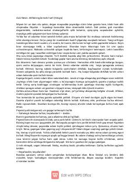

ABPoyezd safaridagi krossvord yechishga mukkasidan ketgan yo‘lovchi haqidagi qiziqarli hikoya.
Poyezdda ketayotgan yo‘lovchi va krossvord yechishga mukkasidan ketgan semiz hamroh o‘rtasidagi qiziqarli suhbat haqidagi hikoya. Muallif krossvord yechishni o‘ziga ermak qilgan odamning g‘alati xulq-atvorini yumor bilan tasvirlaydi.